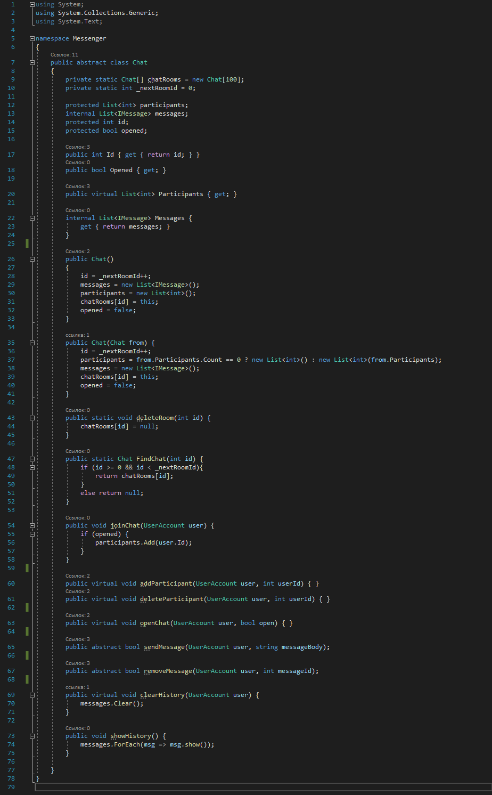
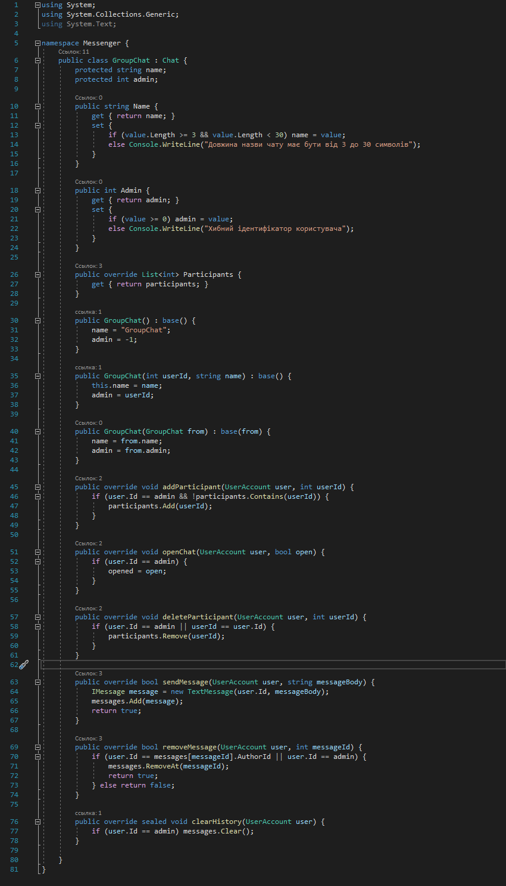
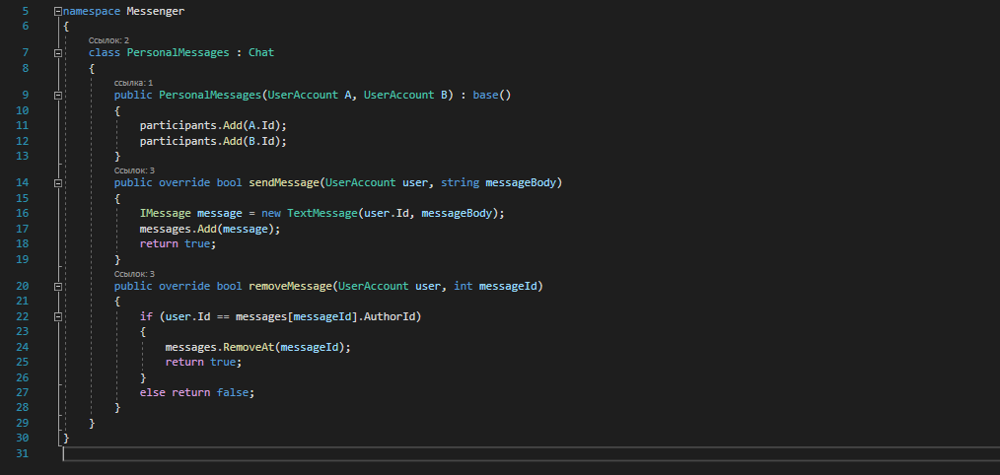
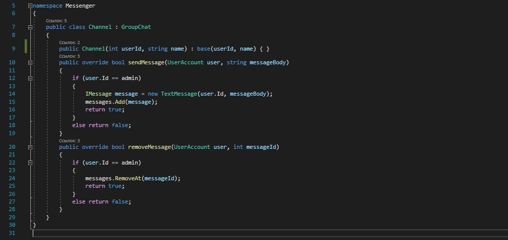

UML-діаграма класів

Тема: УСПАДКУВАННЯ. АБСТАКТНІ КЛАСИ. ІНТЕРФЕЙСИ
Мета: придбати практичні навички роботи створення базавого та похідних класів, перевизначення методів у класі, методів перевантаження унарних, бінарних, логічних операторів, операторів порівняння.
Постановка задачі:
Виконали cтуденти 2 курсу групи ІП-93. Рік навчання 2021
Клас Chat
Клас GroupChat
Клас PersonalMessages
Клас Channel
Віртуальні та абстрактні методи класа Chat

Абстрактний клас Chat